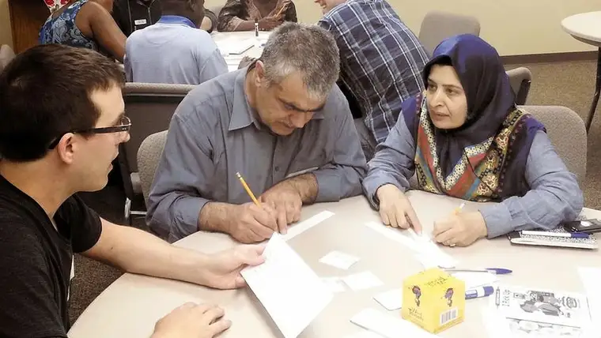

[For the sake of having a repository for my newspaper columns and articles, and allowing a second chance for those who missed them the first time, I reprint them here, with permission. The following ran in The Forum newspaper on August 30, 2014.]
 |
| Austen Dames, at left, works with students at Master’s Heart Ministries’ English as a Second Language program, housed at Bethel Evangelical Free Church in Fargo. Special to The Forum |
{kind=link}
Faith Conversations: Spiritual U-turn prompts summer language program
By Roxane B. Salonen
WEST FARGO – As a fourth-grade teacher at South Elementary here, Sarah Stanley likely will ask her students the question most instructors pose at year’s beginning: “What did you do and learn this summer?”
“God redeems everything for his glory,” she says, speaking about the most recent spiritual U-turn in her life, and how she moved through it.
This past spring, when Sarah and her husband, Mike, learned they were expecting a baby, and that it was due to arrive in August, they were overjoyed. It would mean forgoing a long-awaited mission trip to Africa, but a child would be worth it.
Then the baby died, and their summer calendar suddenly began to look very different, with three months of open spaces, painfully reminding them of their loss.
Even as she grieved, an idea came to Sarah, she says, and within a relatively short amount of time, she’d set in motion a program to help New Americans learn English and encourage them in their Christian faith through the summer.
“I don’t believe we had the miscarriage so this class could be,” she says, “but … I could have had a really sad summer. Instead, God said, ‘See Sarah, this is kingdom-building, too.’ ”
In a symbolic way, Sarah did end up giving birth – through her efforts to lead up the Master’s Heart Ministries’ English as a Second Language program, housed at Bethel Evangelical Free Church in Fargo.
And with assistance from a volunteer team, which transpired rather quickly and miraculously, according to Sarah, she brought new life to many who’ve come here from somewhere else, often fleeing from dire circumstances.
Ultimately, that life returned tenfold.
“So often, it seems, us white people think we have to step in and save the day and the New
Americans are just receiving, receiving,” Sarah says. “Maybe in some cases that’s true, but not with the people we worked with this summer. I was blown away by how much I received.”
In fact, Sarah says she’s been mourning summer’s end. After all, the program’s meant not just to build language skills but relationships, too.
“I have loved the freedom to go and spend time at these people’s homes,” she says, noting that she recently shared a meal with some of the participants, whom she now considers good friends.
Then, Sarah breaks into a story about Gakwaya, one of the participants. “When he started class, all he could say was ‘Hi,’ and he would nod and make motions,” she says.
But one day after he’d been coming to classes for a while, Sarah saw him walking outside near the church, so she ran out to greet him. In broken English, he asked her how she was and how her family was doing. “I just wanted to cry right then,” Sarah says, recognizing the progress in language. “I mean, that is huge.”
Steph Haugen, one of many volunteers who helped organize and carry out the initiative, says it was a privilege to be part of the program’s launch.
“Sarah just loves Jesus with her whole heart, soul and mind, and she loves people, so it was a joy for her to spend her summer doing this and making an eternal impact,” Haugen says. “Her smile just oozes out of her and is contagious.”
Victoria Babingui, a mother of two young children from the African Congo, showed up faithfully every Wednesday to take part. While learning English through picture blocks, dry-eraser-board demonstrations and praying with her tutor, she also learned Bible stories, which were incorporated into the lessons.
Meanwhile, her children were occupied in another room with other kids, also learning about God and their new country.
“We had both a kids’ program and child care, so not only could the students bring their families, but the volunteers could utilize that, too, so a whole family could actually volunteer together,” Sarah explains. “That’s a part of the program we definitely want to bring back.”
In a phone text message to help with the language barrier, Babingui says she is grateful for the program for many reasons, including the chance to meet the woman she calls “my sweet sister Sarah.”
“In this world you can have a rich, smart friend, but if she doesn’t have God, it’s zero,” Babingui says. “God is a fortune, and my sweet friend, she is a woman of God, she loves God, she serves God … and she is a missionary because she is bringing the word of God to all nations, black, white and yellow people.”
But Sarah says she’s the fortunate one.
At one point in the summer, the volunteers learned it was Babingui’s birthday, so they brought a bouquet of flowers to class for her. Babingui, however, wanted to gift them, and prepared African donuts, sambusa and lasagna for everyone to enjoy.
It brings Sarah back to a time several years ago when she had a chance to do mission work in Mozambique, Africa. “No matter what (the African people) have, they’re always willing to give it,” she says. If they have little, they will give that. If they have much, they will give that.
And, it seems, what comes around goes around.
Just days before the first day of school, Sarah sits at her kitchen table admiring a bouquet of flowers – purples, pinks, yellows and red – representing her beautiful summer.
The gift came from another of the program participants, a young African woman who, in light of being orphaned, is now mothering her five siblings. “Even while needing to be blessed, she chose to bless others,” Sarah says, in awe and gratitude.